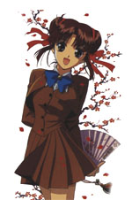
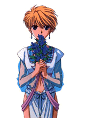
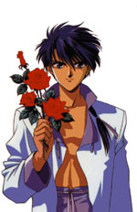
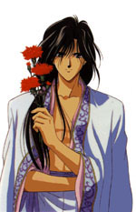
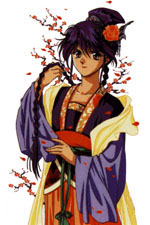
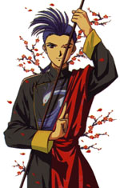
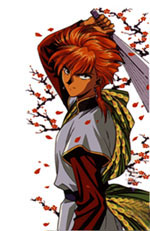
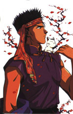
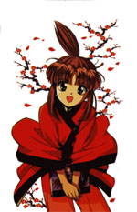

|  | Yuuki Miaka is a Grade 9 exam-candidate for one of the best high schools in Japan. She really wants to pass it and make the most of herself. Most of all, she wants to be with her best friend Yui, who would be going to that school. Problem is, Yui has always been a straight-A's genius. And well, Miaka could do that too… if she tried. Her mother doesn't believe in her though, and keeps discouraging her from taking the exam. But Miaka is determined to do whatever it takes. Another problem would be that Miaka thought more about food than books. Miaka is your typical food-a-holic - hunger is her most experienced feeling, at any time of the day. Besides food, she loves guys, and hasn't been asked out on a date for the fifteen years of her life. One day, she gets sucked into an ancient Chinese novel and her life changes forever. In Ancient China, she learns how to take charge of herself and becomes the Priestess of Suzaku, with seven senshi to protect her. Her responsibility becomes to gather all seven senshi and summon the beast god Suzaku. In the process, she is always faced with numerous obstacles -even her best friend becomes her enemy. But Miaka learns how to believe in herself and her friends; and make all her dreams come true… no matter what the odds. |
|  | Miaka's best friend ever since kindergarten, Hongo Yui values friendship over anything else. She is the smartest kid in school, and looks forward to her best friend being in her class in high school. Even though Miaka might not be scoring as high as her, she believes in her. However, getting sucked into the ancient novel re-directed her path, and changed her values. She gets sucked into the book with Miaka, but gets sucked back out again almost five minutes later, leaving Miaka to go through the pages without her. Miaka becomes the Priestess of Suzaku, while her best friend watches over her by reading the book. Helping the homesick Miaka get back into the real world, Yui gets sucked into the book a second time, and is bombarded with a dreadful experience. Broken and shattered… she finds out that trusting someone can prove to be excruciatingly painful. Thus manipulated into thinking that Miaka betrayed her, a heart-broken Yui wants revenge. She goes against all odds to tear Miaka's conscience and life apart. She chooses to become the priestess of the enemy god, Seiryuu. Always with her senshi Nakago by her side, she proceeds to summon Seiryuu, and destroy all of Miaka's dreams… |
|  | Growing up in the slums of Ancient China, Tamahome learns that his only goal to survival is money. Ever since a tender age, he has been trained in extreme martial arts. This young man goes into the city daily to find some sort of luck using his money sense and his fighting skills. Even though he shows himself to be a miserly money-grubber on the streets, he is really quite the family guy. All his hard-earned money goes to his old, sick father and his four little siblings - Chuei, Gyroukken, Byoukken and Yuiren. He has a very strong emotional attachment with his family - especially his youngest sister Yuiren, who he had practically raised herself since his mother had died giving birth to her. He ends up saving a strange foreign girl named Miaka from a street gang, and ventures to help her out, thinking of her as a little sister. Eventually, his feelings for her grow and grow into a deep, honest and passionate love. And she becomes someone he cares a lot more about than money. He never forgets his duty as the Suzaku senshi Tamahome - to be the protector of the Priestess; a task clearly evident in the symbol of the ogre that appears on his forehead. And he resolves to let no one, not even her best friend or even the Emperor of Konan, stand in his way of loving her. |
|  | Besides being a master swordsman, the fourth emperor of Konan is as benevolent an emperor as could be. He knows the significance that his title carries with it, and makes himself worth that title with his honest rule and prosperous kingdom. It's not just his niceness that makes him the most popular man in all of Konan. Hotohori is also blessed with gorgeous looks; a fact that he is well aware and proud of. In fact, his narcissism is portrayed very interestingly throughout the series. His parents' demise didn't even give him time to break down; he was made emperor immediately - at the age of fourteen. But he was determined to not let his depression take over his responsiblities. Carrying the symbol of the sea serpent on the left side of his neck; this Suzaku senshi was acquainted with the legend of the Priestess ever since he was very young. He lived a very lonely life in the palace, with no siblings or friends. He believed wholeheartedly that when the Priestess came from another world, she would be able to save him from the loneliness that he felt. The Priestess does come, but no, she doesn't love him; but another senshi named Tamahome. Stubborn and valiant, the gentle Emperor retains his deep love for the Priestess, and stays by her side. |
|  | Probably one of the characters who undergoes the most interesting developments in Fushigi Yuugi world. Changed forever by his little sister's demise, Nuriko demonstrates just how powerful the mind and the body can really be. He uses the extent of his dominant trait of strength to prove that hatred is one of the biggest weaknesses in the world. Sporting a red symbol just below his collarbone, beating people up is Nuriko's specialty. He also believes that people who hate each other are too weak to face the reality of life. His philosophy of love conquering everything channels into his remarkable source of courage. His passionate love for his friends gives him the strength and the courage to shove even the biggest obstacles out of their way. The object of his affections being Emperor Hotohori, Nuriko understands just how painful love is when your loved one doesn't return your feelings. Gradually, even the Priestess of Suzaku gains his promise of unconditional love. Through all his cheerfulness and eagerness to help, Nuriko lives a life of love and sacrifice. He may be gay… he may be bisexual… but his vast strength is something to cheer for, and his loving personality enables him to touch the hearts of even the most biased of people. |
|  | In fact, Chichiri is one of the most gifted and powerful of the Suzaku Seven. With psychic abilities comparable to even those of Seiryuu senshi Nakago, this guy proves to be an exceptional blend of many different personalities. One - he is a devoted monk who appreciates the beauty of nature and spends his time meditating in it. Two - he's a skilled magician who can disappear into his kasa (a kind of straw hat) at anytime, and pull anyone else into it as well! This kasa comes in handy for transportational purposes, 'cause it opens into a sort of dimension between different places. Three - he's a natural comedian who succeeds in making everyone crack up by means of his funny voice and expression. Four - he's never short of a set of masks, and never forgets to keep one on his face. Bearing a Suzaku character on his knee, this magician/monk/clown wears a mask that makes it seem as if he's always smiling. But behind that fake mask, behind that carefree, comical attitude, lies the root of his serious nature; the scar of a past too painful to be forgotten… Which is why he swears to protect the Priestess of Suzaku. Claiming to have been through the exact same experiences as her, he is well familiar with her distressful moods. Stealthily and secretly, he watches over true love, and vanquishes all of its enemies… |
|  | When we meet this young man, we come to know him by a different name - Genrou - the name given to him by the people under him. This leader of a mountain gang has incredible fighting abilities and a really cool weapon called a tessen. Tasuki's tessen is really a fan folded out of metal, which can blow flames and incinerate anything in its range. Another cool trick under his sleeve are the magical paper strips. You can write anything you want on those strips, and fling them. The image of what you have written will appear in an illusion, for a while. Living the hard life, Tasuki grew up in this mountain gang with his best friend Kouji. He shows himself to be angry at all times; and keeps complaining about this and that; and keeps saying that he hates girls… but in reality, he's one of the bravest and kindest people, who can put up with any sort of obstacle. He will fight to the end; and will never let his tears show. Instead of crying, he forces himself to gather more and more courage. And when it comes to love, he'll never give up. He'll do anything for his Priestess - even get beaten to death. His determination is exceptional and he's portrayed to be an awesome person. If there is anything he lacks, it's the ability to swim… which serves as a very interesting part of Fushigi Yuugi comedy. |
|  | Mitsukake might be one of the quieter members of the Suzaku gang; but he's certainly one of the most needed. His symbol lies in the middle of his left palm - and gives him the power to heal people of their wounds and their pain. He's your favourite kind of doctor - patient, knowledgeable and trustworthy. Getting rid of people's pain means a lot to him. Which is why he used the power Suzaku had given him to cure all people of their illnesses. A deep irony lies in this soft-hearted doctor's past. He has used his powers to cure almost everyone who came to him. But there is only one person that he has failed to save. And that person is the one woman he fell in love with - Miss Shoka. She had come down with a terrible illness, and he was far away, called on an urgent assignment to treat a patient. She believed in him and hung on for him as long as she could. When Mitsukake came running, he had found that death had seen to her first. Having to walk through life with such a heavy burden of loss, Mitsukake still manages to save his Priestess and the rest of the Suzaku seven from a great deal of pain and injury. |
|  | Completing the collection of the Suzaku Seven, Chiriko adds a wonderful touch of wisdom. With the red mark of Suzaku on his right foot, this child prodigy has meticulously studied the legends of far and wide. Especially the legend of the Konan kingdom, which he is enthralled to be a part of. He keeps watching over the stars and their movements, and can predict terrible events before they happen. He thus senses the gathering of the Suzaku senshi, and their trouble. He knows when his Priestess needs him, and rushes to the rescue. Besides his wisdom and genius, Chiriko gives the Suzaku Seven a lot more. He gives them the unbridled hope of a young child. Such a beautiful thing, that in itself it is worth to be proud of. This youngest member deeply respects Emperor Hotohori and the Priestess, and each and every one of the Suzaku senshi. He believes in them and counts on them to make miracles happen. Deep inside his heart though, flutters a restless spirit. Through his young eyes, he questions love and sacrifice. And he worries about the fact that he'll never be able to prove himself as something significant to the Suzaku senshi. |